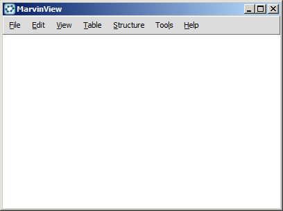
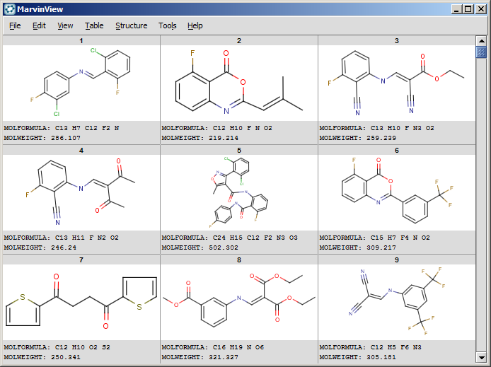
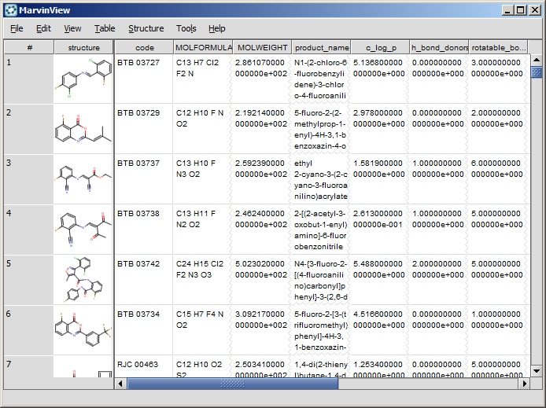

MarvinView Graphical User Interface
Table of Contents
The default layout of the MarvinView user interface is shown in the following picture.

It consists of the following primary components:
- Canvas: This is the main viewing area where chemical structures, queries and reactions are displayed.
- Menu Bar: It is located at the top of the main frame, containing menu titles that describe the content of each menu.
- Pop-up Menus: A pop-up menu (also called contextual menu) is a menu that appears upon right clicking over the canvas with the mouse.
Table Layout
MarvinView can display a large number of molecules and their corresponding chemical data fields in tabular format.
There are two main layouts available. Both layouts allow specifying which chemical data fields to display beside the molecules.
Molecule Matrix Layout

Spreadsheet Layout

Return to Top
Copyright © 1998-2012
ChemAxon Ltd.
http://www.chemaxon.com/marvin